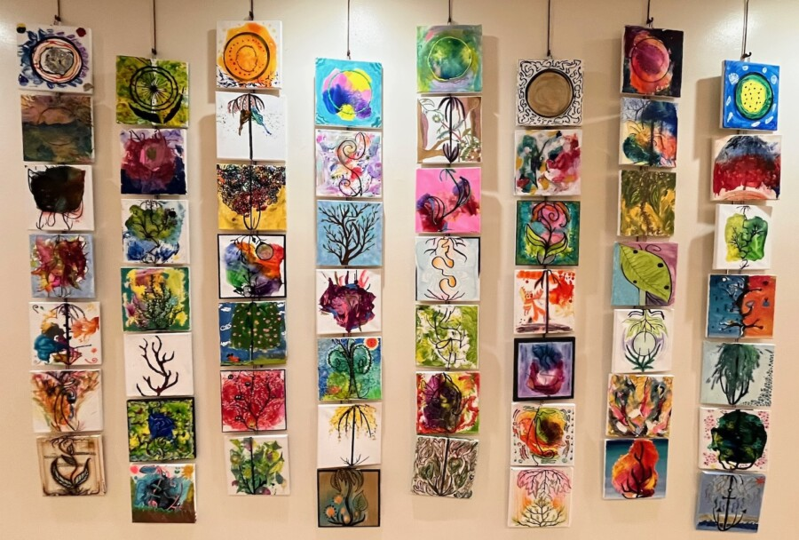

Creativity Fest Community Art Exhibiton
The Riverside Arts Center (RAC) is pleased to present our second annual Creativity Fest Community Art Exhibiton. During the month of February, RAC invited the public to join in making art led by our teaching artists, Shawn Vincent and Tariq Tamir. Participants of all ages were invited to add their personal artistic embellishments to prepared canvas panels based on this year’s theme of Grow & Gather.
Please join us on Friday, March 13th from 5 to 7 pm for a reception to celebrate the artists and their art. Light refreshments will be served at the Riverside Arts Center, a short block around the corner from the Town Hall. The exhibition will be on view at 27 Riverside Road from March 1 through July 1, 2026.
Riverside Town Hall exhibitions feature work by area artists, celebrating the exchange of support and generosity between the community of Riverside and the Riverside Arts Center.
Exhibition Reception: Friday, March 13, 2026, 5:00 – 7:00 pm
Exhibition Dates: March 4 – July 1, 2026
Riverside Town Hall: 27 Riverside Road, Riverside, Illinois 60546
Viewing Hours: Monday – Thursday 9:00 am – 4:00 pm, Friday 9:00 am – 3:00 pm
Riverside Arts Center